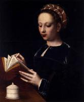

| Читання Магдалини
1520
|
 | Плач
1520-25
|
 | Богородиця з немовлям зі святою Анною
1525-30
|
 | Зняття з хреста
1528
|
 | Святий Домінік
1528
|
|  | Марія Магдалина
1530
|
 | Богородиця з немовлям зі святими Катериною і Варварою
1530-32
|
 | Діва з немовлям
1531
|
 | Плач
|
 | Марія Магдалина
|
 | Читання Марії Магдалини
|
 | Відпочинок під час втечі до Єгипту
|
 | Мадонна з грушею і двома святими жонами
|
 | Святий Лука
|
 | Діва Марія
|
 | Святе Сімейство
|